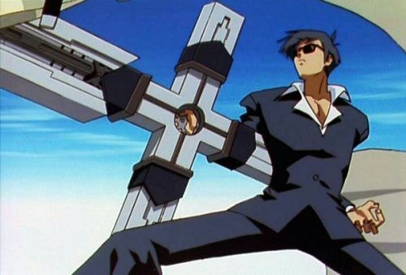
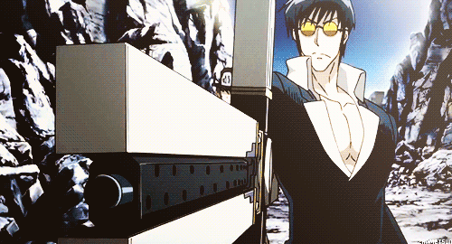
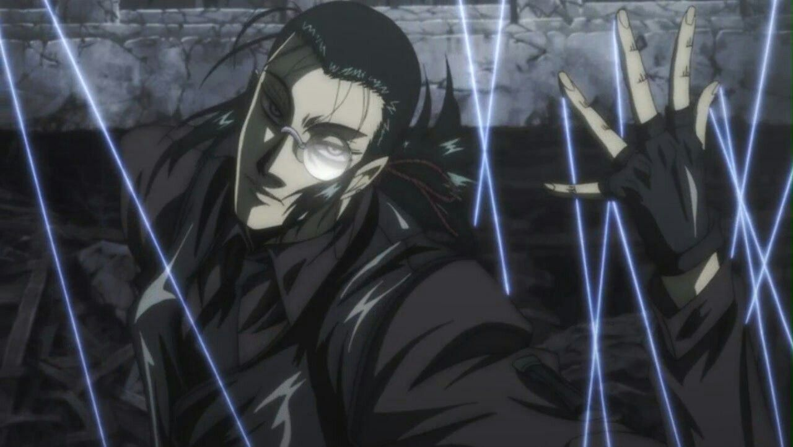
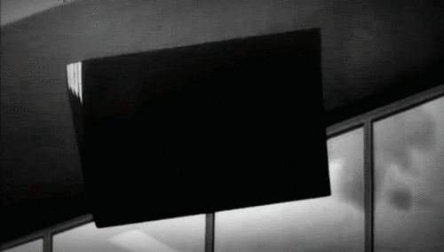
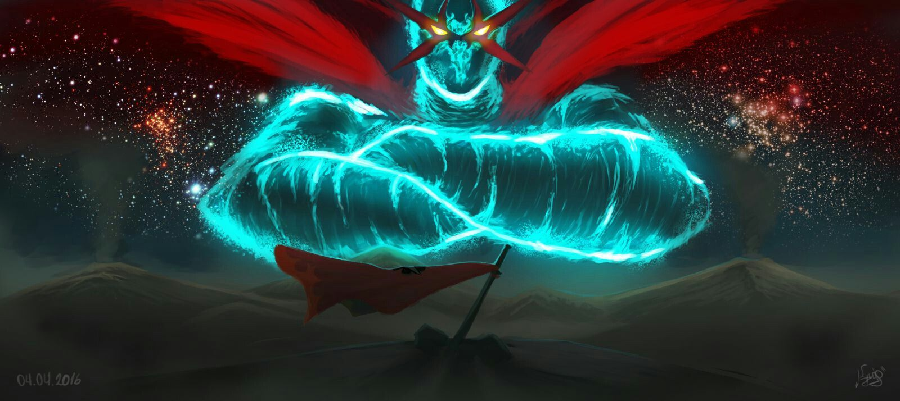

AS 5 "ARMAS" MAIS PODEROSAS DOS ANIMES
Neste top 5 apresentaremos as 5 armas mais poderosas dos animes em sua maioria Shounen. Os quesitos ultilizados foram Originalidade, peculiaridade e realizações , além de claro Força.
Os intens desta lista não pertence a nenhum dado oficial , somente pesquisas feitas por mim com participação de 1 pessoa , EU.
5º lugar PUNISHER (Triggun)

Punisher (algo como punidora, ou justiceira) é uma arma enorme em forma de cruz possuída pelos melhores membros do “Olho de Michael“, um culto que existe no mangá Trigun. Em teoria, existem apenas dez dessas no mundo; e uma delas é possuída por Nicholas D. Wolfwood, o melhor (talvez o único bom) personagem do mangá todo. Aparentemente outras Punishers tem design levemente diferente, mas considerarei a arma específica de Wolfwood para esta posição.
 Embora pareça desnecessariamente grande, a arma justifica seu formato: o seu braço mais comprido possui duas poderosas metralhadoras embutidas; o braço oposto a este, por sua vez, possui um lança-mísseis(!!). O anime e o mangá não tem um consenso quanto à usabilidade dos outros braços, e o autor é incompetente demais para fazer uma explanação mais lógica e completa de todas as funcionalidades da arma. Como é dito no mangá, a Punisher é muito pesada, o que restringe um pouco sua usabilidade. Mas ainda assim, seu poderoso poder de fogo e, acima de tudo, sua capacidade estilística (tem um cara andando com uma cruz nas costas pelo deserto. Isso é estilo!), fizeram a Punisher conquistar a posição mais baixa deste Top 5-1.
4º lugar fios do Walter (Hellsing)
O mordomo da família Hellsing. Walter serviu Arthur Hellsing desde a juventude e após a morte dele, se tornou o tutor de Integra, a pequena filha de Arthur. Sua devoção a Hellsing é alta assim como sua lealdade a esta. Mesmo sendo humano, Walter possui grande força e velocidade, manipulando afiados fios de prata com precisão. Ele é um perito na construção de armas, sendo na concepção de Alucard um verdadeiro artesão.
3º X-Gloves (Katekyo Hitman Reborn)

Um par de luvas especiais feitas por Leon para Tsuna. As luvas tem duas versões e servem para voar, aumentar a força e usar chamas para ataques diretos. As luvas aparecem pela primeira vez no Arco Kokuyo, quando começa a luta entre
2º lugar Death note (Death Note)
Na história, o "Death Note" é um caderno, normalmente de capa preta, e que tem seu nome escrito na parte
frontal dele. Esse caderno tem a capacidade de matar qualquer pessoa apenas se os nomes destas pessoas
forem escritos nele, enquanto o portador visualizar mentalmente o rosto de quem quer assassinar.
No entanto ha uma serie de regras no qual devem ser seguidas veja
1º lugar Tengen Toppa (Gurren Lagan)
